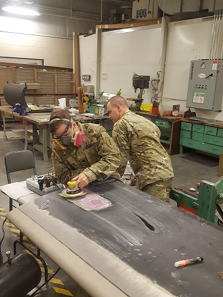

I was required to do composite repairs on the Aircrafts as well. This includes but not limited to fiberglass, carbon fiber, and kevlar.
Many of these repairs were on the helicopter blades, as well as the fairings (which is like a shell that gets placed on top of the aircraft).
This is a composite repair that I did on a CH-47(Chinook) helicopter blade.